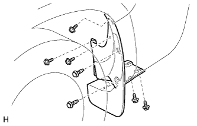
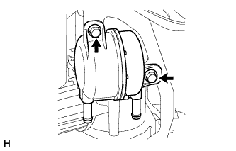
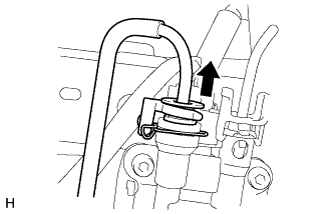
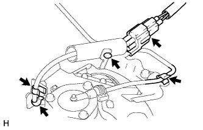
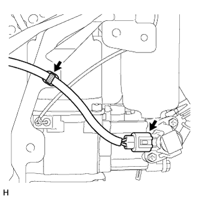
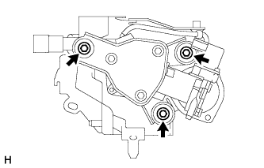
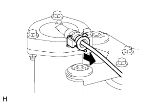
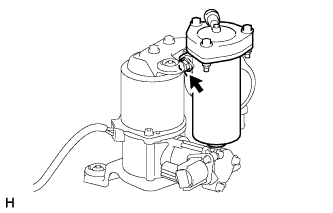

ОСУШИТЕЛЬ СИСТЕМЫ РЕГУЛИРОВКИ ВЫСОТЫ ПОДВЕСКИ > СНЯТИЕ |
| 1. ОТСОЕДИНИТЕ ПРОВОД ОТ ОТРИЦАТЕЛЬНОГО ВЫВОДА АККУМУЛЯТОРНОЙ БАТАРЕИ |
| 2. СНИМИТЕ ЛЕВОЕ ЗАДНЕЕ КОЛЕСО |
| 3. СНИМИТЕ БРЫЗГОВИК ЛЕВОЙ ЗАДНЕЙ БОКОВОЙ ПАНЕЛИ |
|  |
Выверните 5 винта и освободите 2 фиксатора.
Снимите брызговик задней боковой панели.
| 4. СНИМИТЕ КРЫШКУ КОМПРЕССОРА РЕГУЛИРОВКИ ВЫСОТЫ ПОДВЕСКИ |
Снимите 3 фиксатора и крышку компрессора регулировки высоты подвески.
| 5. СНИМИТЕ ЛЕВУЮ ЗАЩИТУ ЗАДНЕГО БАМПЕРА В СБОРЕ (для 5-дверных моделей) |
 |
Выверните винт.
Освободите направляющую и снимите защиту заднего бампера.
| *1 | Направляющая |
| 6. СНИМИТЕ ФИЛЬТР СИСТЕМЫ РЕГУЛИРОВАНИЯ ВЫСОТЫ ПОДВЕСКИ |
Сдвиньте 2 фиксатора и отсоедините 2 шланга.
|  |
Выверните 2 болта и снимите фильтр системы регулировки высоты с кронштейна компрессора регулировки высоты.
| 7. ОТСОЕДИНИТЕ ТРУБКУ РЕГУЛИРОВКИ ВЫСОТЫ № 2 |
|  |
Отсоедините трубку регулировки высоты № 2 от клапана регулировки высоты № 2 (Нажмите здесь).
| 8. СНИМИТЕ КОМПРЕССОР РЕГУЛИРОВКИ ВЫСОТЫ В СБОРЕ |
Отсоедините разъем.
|  |
Снимите 3 зажима.
Открепите трубку регулировки высоты № 2.
|  |
Отсоедините разъем.
Снимите зажим.
|  |
Выверните 3 болта и снимите компрессор регулировки высоты.
| 9. СНИМИТЕ ОСУШИТЕЛЬ СИСТЕМЫ РЕГУЛИРОВКИ ВЫСОТЫ ПОДВЕСКИ В СБОРЕ |
|  |
Отсоедините трубку регулировки высоты № 2 (Нажмите здесь).
|  |
Выверните болт и снимите осушитель системы регулировки высоты подвески с компрессора регулировки высоты.
Снимите кольцевое уплотнение.